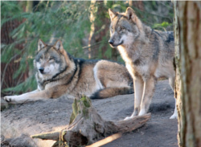

Wilk zajmuje niebagatelne miejsce w polskiej (i nie tylko) kulturze. Jest bohaterem literatury, malarstwa, czy filmu. Na przestrzeni wieków ,,cieszył się” raczej złą sławą, budził bowiem lęk. Jego tryb życia, pełen tajemniczych dla człowieka zachowań, jak np. wycie do księżyca sprawiał, że powstawało na jego temat wiele wyobrażeń. Świadczą o tym liczne legendy, jak np. o wilkołaku, czyli wilka który za dnia przybiera ludzką postać, by pod osłoną nocy przeistaczać się w hybrydalną, krwiożerczą bestię, napadającą na ludzi i zwierzęta. Osoba, która przeżyje pogryzienie przez wilkołaka, staje się identyczną istotą. Wilki uważane były za sprzymierzeńców diabła, czy czarownic. Jako przykład może posłużyć chociażby pierwszy (i jak niektórzy uważają, jedyny) polski horror, Wilczyca (reż. M. Piestrak, 1982), opowieść o kobiecie przemieniającej się w wilka. Dzisiaj ten pierwotny lęk przed wilkami, chociaż wciąż obecny w świadomości ludzi, ustępuje powoli na rzecz postaw proekologicznych. Wilk jako gatunek jest bowiem zagrożony wyginięciem. I chociaż pewne działania w Polsce sprzyjają odrodzeniu się populacji wilków w naszym kraju (podobno pojedyncze sztuki można spotkać już nie tylko w górach, ale również na północy, w rejonach Kaszub), to jednak wciąż wilki giną na skutek bezprawnych działań rolników i hodowców, którzy mszczą się na wilkach, podejrzewanych o zabijanie zwierząt domowych.
